为什么要看图 / Why these images matter
课件图片有三种作用：给出定义的视觉记忆、展示算法/数据的例子、帮助你把抽象术语连接到具体对象。考试遇到图片或情境题时，先识别“对象—关系—步骤”，再写英文。
Use the image to identify the objects, their relationships, and the process. Then express the idea in one or two clear English sentences.
Week 1 · Programming / 编程
“A programming language is a set of symbols and rules for instructing computer hardware.”
Week 2 · NumPy / 数组
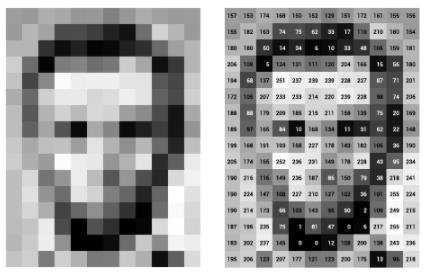
“An image can be represented by an array of pixel values.”
Week 3 · AI / 人工智能
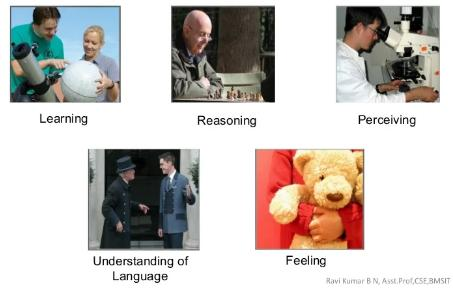
“AI involves learning, reasoning, perception, and language understanding.”
“The four views differ in whether a system thinks or acts and whether success is judged by human or rational standards.”
Week 4 · Machine learning / 机器学习
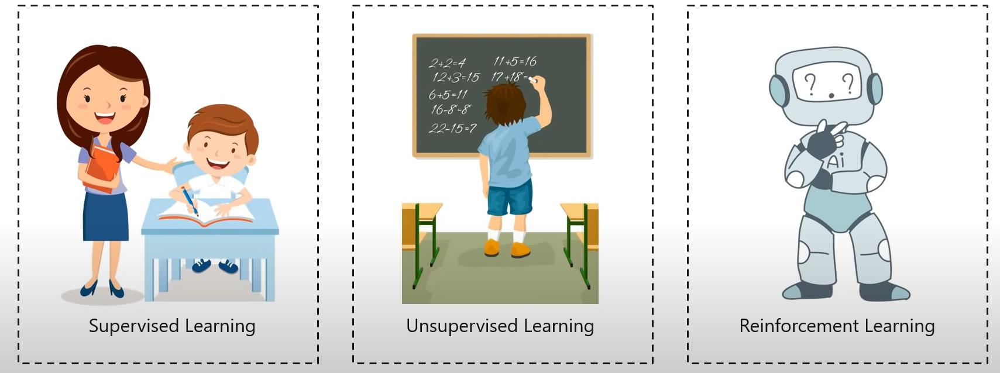
“Supervised learning uses labels; unsupervised learning finds structure without labels; reinforcement learning learns from rewards and errors.”
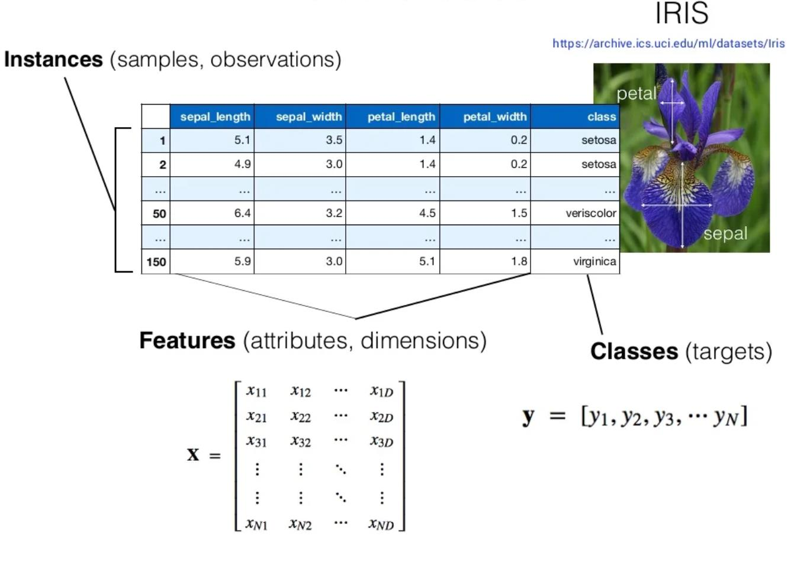
“Each row is a sample, each feature describes the sample, and species is the target label.”
Week 6 · K-means / K 均值
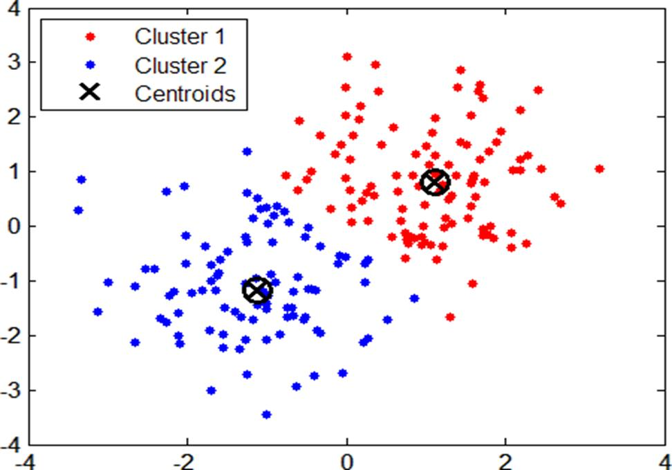
“The coloured points show cluster membership, and the crosses show the current centroids.”
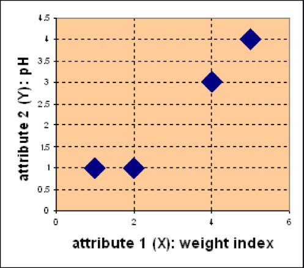
“The two axes are features, and K-means groups medicines according to their distance in feature space.”
图片题的通用答法 / Universal image-answer frame
Identify: “The image shows ___.”
Explain: “It illustrates ___ because ___.”
Connect: “In the course, this relates to ___.”
Process: “First, ___. Next, ___. Finally, ___.”
- 我能从图片说出对象和关系。
- 我能把图片连接到一个课程术语。
- 我能用两句英文解释图片。
- 我能写出图示算法的步骤。
0 / 0 completed
数据工具截图 / Data-tool visuals
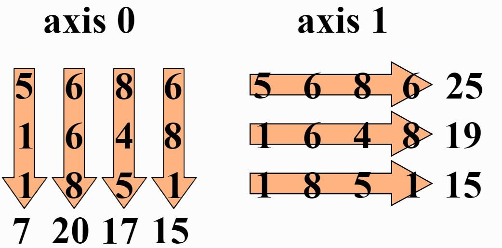
axis=0 向下聚合并保留 columns；axis=1 横向聚合并保留 rows。Axis describes the dimension being reduced.
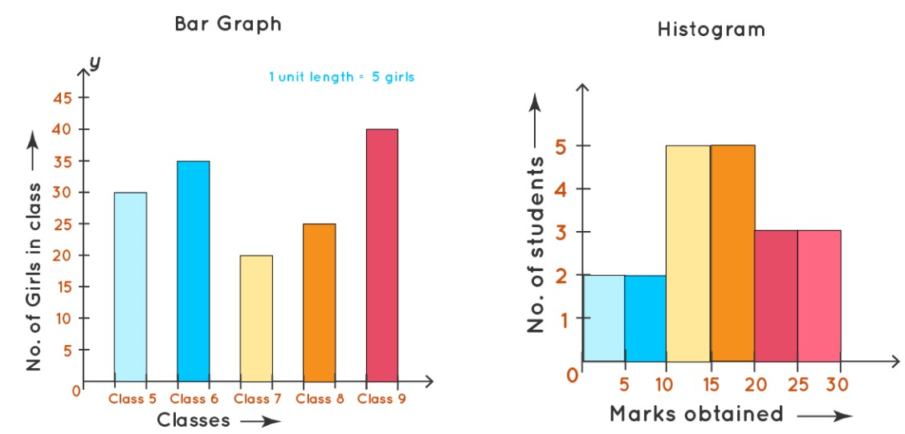
A histogram represents a distribution, not category labels.
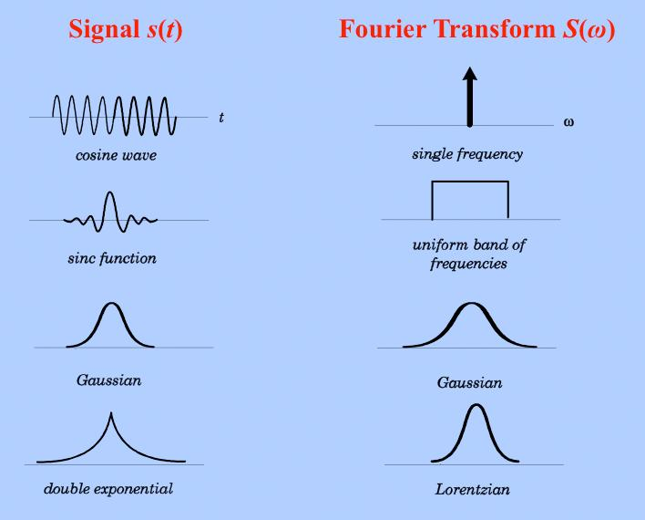
FFT reveals the frequency components of a signal.
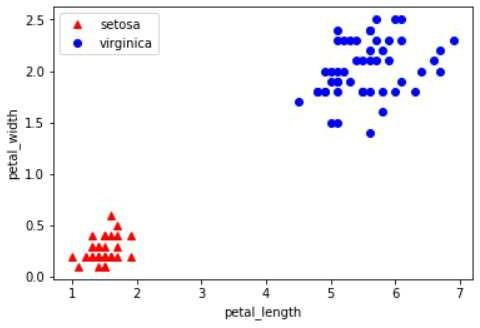
Feature separation may support classification.
搜索与专家系统截图 / Search and expert systems
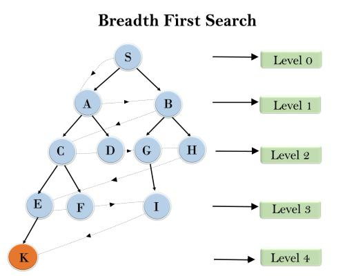
BFS expands all nodes at one depth before moving deeper.
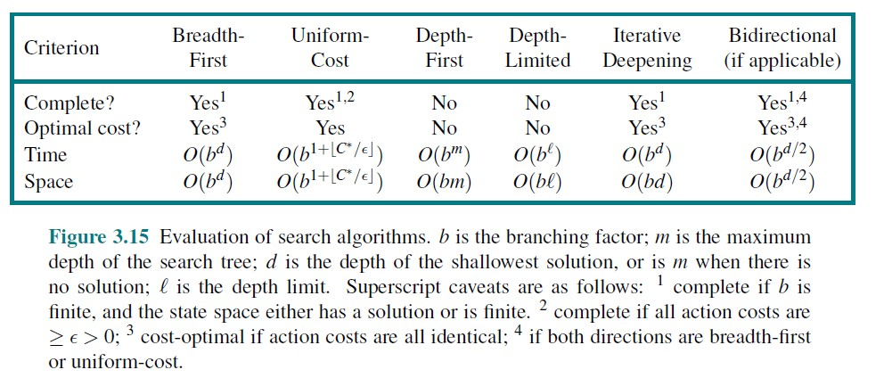
Search properties depend on branching, depth, costs, and the heuristic.
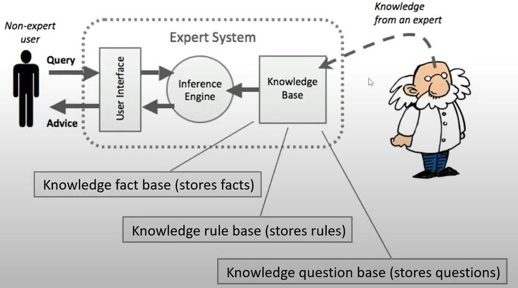
The inference engine applies knowledge-base rules to case facts.
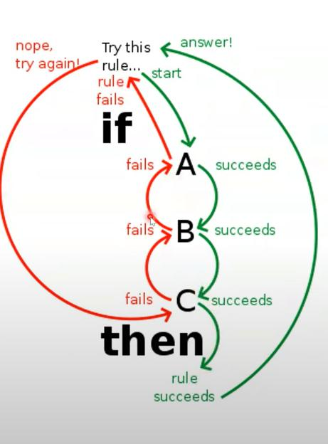
A conclusion can become a fact for another rule.
机器学习与聚类截图 / ML and clustering
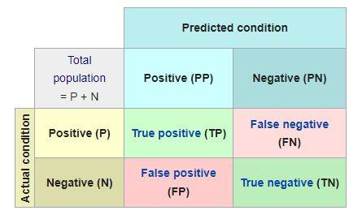
False positives and false negatives represent different error costs.
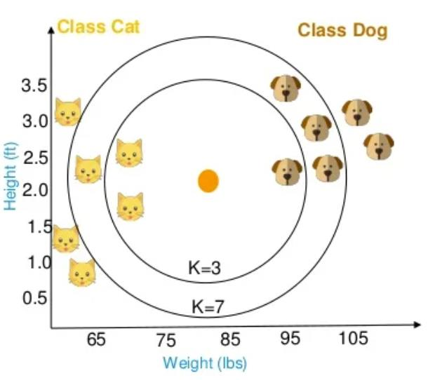
KNN is distance-based and therefore sensitive to feature scaling.
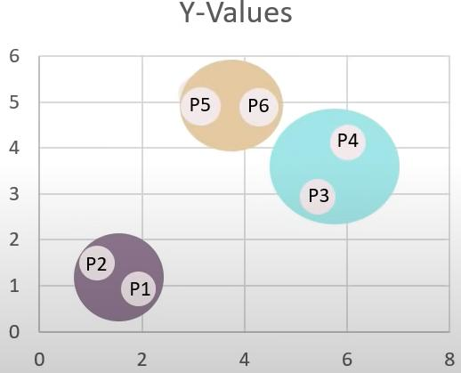
Cutting the dendrogram at a chosen height produces clusters.
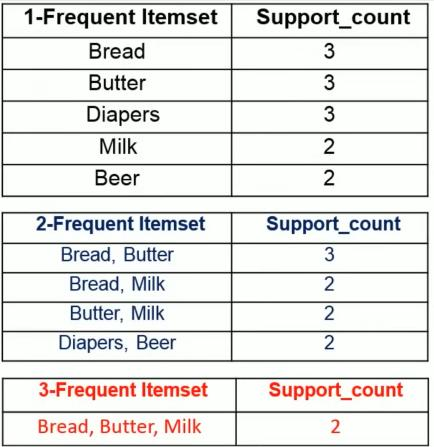
Ck 经过 minimum support 筛选成为 Lk；不 frequent 的 candidate 被删除。A candidate is pruned when its support is below the threshold.
截图审查边界 / Audit boundary
10 份课程 Markdown 共引用 870 个图片文件，去重后为 724 个独立图片。审查包括完整缩略图总览和关键原图复核。网页保留承载定义、代码、公式、流程、数据或计算步骤的图；重复 Logo、背景纹理、装饰色块、箭头和相同切片不重复展示。
Knowledge-bearing visuals were transcribed into searchable text. Decorative and duplicate assets were not treated as additional course concepts.